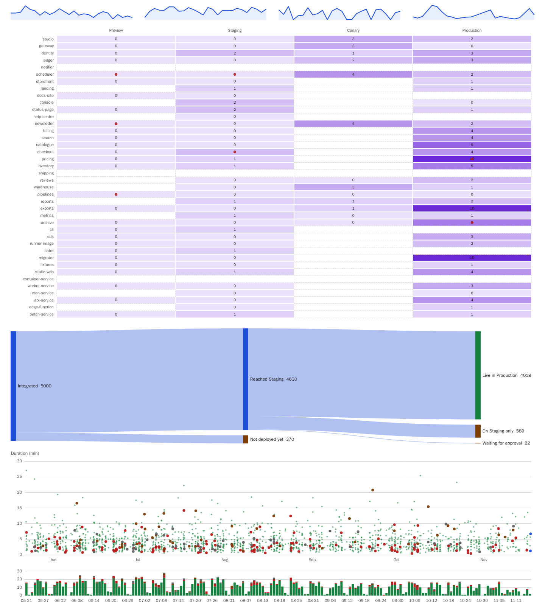
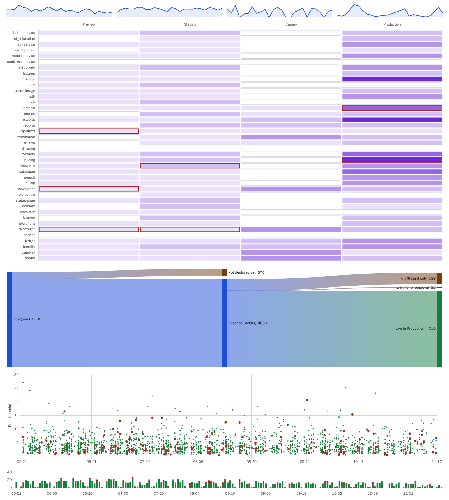

Concept Dossier · AGT-3950 · Deployment dashboard charts
Framework, budget and data
The measured comparison of three chart frameworks and three routes to 3D, the Angular wrapper, the performance budget with what the prototype measured, the aggregation each view needs, and the files of this Dossier.
Position
The structure canvas Dossier (AGT-3955, docs/live-structure-canvas/) is on develop and accepted. Its D1 recommends an own Canvas 2D engine as the one canvas renderer of the Studio and its D2 uPlot as the one chart library of the hosting area; it measured uPlot, ECharts and Chart.js on time series and bars. Its decisions are recorded as open with those recommendations, so they are the working decisions. The product's structure view already draws with its own Canvas 2D code. The brief of this card names ECharts as the baseline and asks for numbers from the prototype; the addendum asks for one chart library and at most one canvas or WebGL renderer for the whole Studio. So the question measured here is narrow: do the deployment views, which need a heat map, a flow and a brushed timeline rather than time series alone, give a reason to choose differently?
Framework
Each candidate drew the same five charts (tile map, release flow, timeline, brush chart, four sparklines) from the same aggregate of the large synthetic set, behind the same adapter contract mount(host, viewModel, context) with update(viewModel). Candidate A is the chart module of the prototype (src/charts.js); B and C are adapters in bench/. Animation off, tooltips on.
| Candidate | Lazy chunk, gzip | Data to first chart | Data to all five views | Filter change, median | Filter change, p95 | Script time per filter change | JS heap after mount, after 20 filters | DOM elements, canvases | Licence, last release |
|---|---|---|---|---|---|---|---|---|---|
| A · uPlot 1.6 plus own forms | 29.9 kB (68 raw, 26.8 brotli) | 50 ms | 83 ms | 33 ms | 53 ms | 3.2 ms | 1.5 MB, 1.9 MB | 104, 7 | MIT; release March 2025 |
| B · Apache ECharts 6.1 | 220.7 kB (652 raw, 185.5 brotli) | 132 ms | 392 ms | 83 ms | 383 ms | 57.2 ms | 9.6 MB, 11.4 MB | 22, 10 | Apache-2.0; release May 2026 |
| C · Chart.js 4.6 with matrix, sankey and zoom plugins | 82.1 kB (232 raw, 71.3 brotli) | 74 ms | 141 ms | 33 ms | 67 ms | 19.2 ms | 3.6 MB, 4.6 MB | 8, 8 | MIT; release November 2026 |
Measured 26 November 2026 on the shared task runner: Intel(R) Core(TM) i7-8700 CPU @ 3.20GHz, 12 threads, headless Chromium 147.0.7727.15, 1440x900, charts 1400 px wide at device pixel ratio 1; 2D candidates with the GPU process off (CPU raster). 5 runs each, medians. Set: 40 projects, 4 environments, 6 tenants, 2,000 deploy runs, 5,000 cards (synth() of src/data.js). Versions: echarts 6.1.0, echarts-gl 2.1.0, uplot 1.6.32, chart.js 4.6.2, chartjs-chart-matrix 3.1.0, chartjs-chart-sankey 0.24.1, chartjs-plugin-zoom 3.0.2, three 0.187.0. Times to a painted frame are taken after two animation frames, so they step in units of 16.7 ms; the script time per filter change is the finer signal. The runner is shared and single runs of ECharts varied between 310 and 822 ms to all views. WebGL on the runner is ANGLE (Google, Vulkan 1.3.0 (SwiftShader Device (Subzero) (0x0000C0DE)), SwiftShader driver): software, so the WebGL times of the 3D table say nothing about a real GPU; their chunk sizes do.


bench/run.mjs from its harness page after the filter script, headless Chromium, 1440 px, light. Data: the seeded synthetic set, not a product state.Reading the numbers
- Size. ECharts needs five chart modules, six component modules and the canvas renderer for these views; tree-shaking leaves a chunk more than seven times that of A. Chart.js with its three plugins is in between.
- First frame. All three paint the first chart inside 300 ms on this machine. ECharts needs longer than that for the whole page; A and C do not.
- Filter change. A recomputes the aggregate and redraws all views in a few milliseconds of script; its painted-frame time is two animation frames. ECharts stays under 100 ms at the median but not at the 95th percentile. With
notMergeits median was about 130 ms in a single trial. - Fairness. The adapters for B and C draw the same five charts but plainer than A: tiles shaded by drift with a mark for a failed last run (ECharts also prints the drift number), without release text, health dot, approval pill or corner flags, and one duration scatter instead of environment lanes. That favours them. ECharts brings brush, legend, dataZoom and an aria description that A has to build; A's own forms are about 25,000 characters of source and 6.6 kB gzip of its chunk.
- Accessibility. None of the three makes canvas content reachable by itself. ECharts can generate a text description; the table alternative, keyboard focus on marks and the buttons of the flow are ours in every case and are part of the prototype.
- Theming. All three take colours and fonts as values. The prototype reads the Studio tokens from the element (
src/theme.js) and repaints on a theme change; canvas text needs resolved values in every candidate. One finding for the Studio: its status tokens are not a categorical palette. In the light theme failed and rolled back are ΔE 1.9 apart under protanopia (dataviz palette validator), so the views never separate outcomes by hue alone: a shape per outcome on the tiles, a ring for rolled back on the timeline, fixed stacking order in the day counts, and the words in tooltip and table. - Licence and maintenance. All permissive. ECharts and Chart.js are active; uPlot is small, stable and slow-moving, with its last release in March 2025. That is the risk of A, bounded by the size of what would have to be replaced: two charts behind one host.
Result. A is recommended (D1). It is the only candidate that also keeps the rule of the family, one chart library for the Studio, without reopening the structure canvas decision. C is a sound second: inside the budget at 2.7 times the bytes, with three plugins to keep in step. B is the choice if one framework for every future form is worth 220 kB and a slower update to the owner; nothing in these views needs it.
Wrapper
Recommended: a thin own chart host component (D2 A), used by every chart of the Studio.
- Standalone, OnPush. Signal inputs for data, options and theme; an output for selections (tile, state, range, outcome).
- The chart module is loaded with a dynamic
import()inside the host, so no chart code reaches the initial bundle. A skeleton in the chart's shape shows after 200 ms. - One chart instance per host, created after first render and reused: an effect calls
setDataor the form'supdate; it is rebuilt only when the shape of the chart changes. ResizeObserveron the host element sets the size; nothing listens to window resize. Destroy disposes the instance and the observer.- Work runs outside Angular's zone; only a selection re-enters it.
- Theme: the host reads the tokens once per theme change and passes resolved values.
A wrapper library (ngx-echarts, ng2-charts) exists only for B and C, adds a dependency that must follow both Angular and the chart library, and still leaves the lazy import, the theme and the selection output to us. No wrapper at all repeats lifecycle code in every view.
3D
The same landscape of 1,040 bars (26 weeks by 40 projects) in three renderers:
| Candidate | Lazy chunk, gzip | First frame | Frame while turning | Browser CPU per turn step | Renderer on this runner |
|---|---|---|---|---|---|
| A · Canvas 2D, own (no library) | 2.8 kB (6 raw) | 79 ms | 16.4 ms | 11.8 ms | CPU raster, no WebGL |
| B · three.js 0.187 | 131.8 kB (529 raw) | 224 ms | 140.0 ms | 188.8 ms | WebGL in software (SwiftShader) |
| C · echarts-gl 2.1 with ECharts 6.1 | 559.7 kB (1761 raw) | 689 ms | 549.5 ms | 718.3 ms | WebGL in software (SwiftShader) |
echarts-gl. echarts-gl 2.1.0 declares the peer range ^5.1.2 || ^6.0.0 and its prebuilt bundle draws the scene with ECharts 6.1.0 without a page error. Its modular entry points do not build against ECharts 6: Build failed with 19 errors: Could not resolve "zrender/lib/core/matrix", Could not resolve "echarts/lib/util/layout" and others, because the export maps of echarts 6 and zrender 6 do not list those paths. The prebuilt bundle requires the whole CommonJS ECharts, so nothing is tree-shaken: 559.7 kB gzip for the 3D view alone, 788.2 kB together with the tree-shaken 2D chunk, and a chart created from echarts/core next to it is a second copy that draws an empty canvas without a warning. Maintenance: one release (May 2026) since March 2022.
three.js works and would be the choice for scenes with real depth, lighting or tens of thousands of objects. For a thousand boxes it brings a second renderer and a chunk four times the whole 2D chart chunk. Canvas 2D draws the scene as sorted quads, which is exact for boxes on a grid under an orthographic camera, costs a few kilobytes and renders on the CPU path that every machine has. It is recommended (D4 A) and keeps the family rule of one canvas technique and no WebGL. Its limit is honest too: no perspective, no lighting beyond two shaded faces, and a scene of many thousand bars would need another approach.
Budget
| Budget | Limit | Measured in the prototype |
|---|---|---|
| Studio initial bundle | No growth: chart code only in lazy chunks | Not measurable in a Dossier; the prototype shell imports no chart code statically, checked by the split build. DDC-1 compares build stats with develop. |
| 2D chart chunk | At most 35 kB gzip with uPlot and its styles | 29.4 kB gzip (67.5 kB raw), of which uPlot 23.3 kB |
| 3D chunk | At most 4 kB gzip, requested only when the 3D view opens | 2.4 kB gzip; requests for it before opening: 0, after opening: 1 |
| First chart | Within 300 ms after the data arrives, mid-range laptop | 59 ms to the first chart and 95 ms to all views (median of 5 loads of the prototype, large set, 1440 px) |
| Filter change | Within 100 ms on the large set | 19 ms median, 42 ms p95 over 20 scripted changes, to the painted frame |
| DOM | No element per card outside a virtualised list | 297 elements in the whole view with 2,000 runs and 5,000 cards; 17 row elements in the list of 4,019 cards |
| Requests | At most one a view; one aggregate for all | Prototype: one aggregate function feeds every view. Product: GET /api/deploy/dashboard plus the paged card list, instead of 1 + N requests today |
| Animation | Off above a data threshold and with prefers-reduced-motion | Motion is off on the large set (threshold 1,000 runs), on on the installation set, off with reduced motion; the 3D view drew 0 frames in 3 idle seconds |
| Assessments | Within each persona's weekly allowance | About 6,200 tokens an assessment; see Cost and freshness |
| Chunk of the prototype (split build) | Holds | Raw | gzip | brotli | Loaded |
|---|---|---|---|---|---|
| Shell | filters, URL state, figures tiles, card list, assessment panel, specification validator | 28.0 kB | 10.5 kB | 9.3 kB | with the page (in the product: with the route, not the initial bundle) |
| Shared | aggregate and theme reader used by shell and charts | 9.7 kB | 4.6 kB | 4.1 kB | with the page |
| 2D charts | uPlot, tile map, release flow, timeline, sparklines | 67.5 kB | 29.4 kB | 26.4 kB | dynamic import when the data arrives |
| 3D view | deploy landscape on Canvas 2D | 4.7 kB | 2.4 kB | 2.1 kB | dynamic import when the 3D view is opened |
Budget rows are measured by verify.mjs on the built prototype on the shared task runner (Intel Core i7-8700, headless Chromium, CPU raster), which stands in for the mid-range laptop of the brief; DDC-1 and DDC-3 repeat the checks as tests in the product. The lazy-loading rows are measured on the split build of the same sources served over HTTP; the Dossier's prototype.html is the same code in one inline file, because the Studio's Dossier viewer runs inline scripts only.
Aggregation
Today the page asks once for the matrix and once per project for delivery lanes, the latter again every 15 seconds. The views need one consistent as-of, so one aggregate serves all of them (D10 A). It is computed in the deploy feature from the projections that exist, cached for 10 seconds like /api/environment/flow, and announced by one task hub event at most once a second.
GET /api/deploy/dashboard?group=&project=&environment=&tenant=&from=&to=&outcome=
{ "asOf": "...", "seq": 412,
"projects": [{ "id", "group", "environmentsDeclared" }],
"environments": [{ "id", "name", "kind", "order" }],
"tiles": [{ "projectId", "environmentId", "setUp", "liveVersion", "newestVersion", "releasesBehind",
"lastRun": { "state", "atUtc", "failedStep" }, "health", "approvalsWaiting",
"tenants": [{ "name", "releasesBehind", "health" }],
"backup": { "covered", "lastVerifiedAtUtc" }, "warnings": [{ "kind", "severity", "title", "blocks", "next", "source" }] }],
"flow": { "nodes": [{ "id", "count" }], "links": [{ "from", "to", "count" }],
"waitingByProject": [{ "projectId", "integrated", "staging", "approval" }] },
"runs": { "startedAtUtc": [], "durationSeconds": [], "project": [], "environment": [], "tenant": [],
"state": [], "failedStep": [], "version": [], "steps": ["..."],
"perDay": { "from": "...", "succeeded": [], "failed": [], "rolledBack": [], "cancelled": [] } },
"figures": [{ "id", "value", "before", "unit", "weekly": [] }],
"landscape": { "weeks": 26, "count": [], "failedShare": [] } }
GET /api/deploy/dashboard/cards?stage=&offset=&limit= (same filters; limit at most 200; "total")
| View | Part | Built from | Slice |
|---|---|---|---|
| Overview | tiles | DeployMatrixResponse with tenant statuses and environmentsDeclared (AGT-3949), newer release, pending approvals of the delivery columns; later backups and warnings | DDC-1, DDC-5 |
| Release flow | flow, card list | CardDeploymentView badges per card, delivery columns starting at integrated, instance "integrated, not live" (AGT-3879) | DDC-1, DDC-2 |
| Deploy timeline | runs | Deployment records of all projects (start, finish, state, FailedStep, tenant, trigger for rolled back), instance runs overlaid; as columns with times as epoch seconds: 62 kB of JSON, 18.5 kB gzip for the 2,000 runs of the synthetic set | DDC-3 |
| Delivery figures | figures | The same records plus the integration time of each card | DDC-4 |
| Landscape | landscape | Counts of runs by week and project | DDC-7 |
| Assessment | GET /api/deploy/dashboard/assessments?persona= | The cached view specification of a persona occurrence | DDC-6 |
Facts the endpoints do not carry today: a run's duration (computed from start and finish), the release version on a deployment (joined from the release), and a list of earlier instance runs (the instance view returns the latest only, the overlay into deployments has all).
Covered elsewhere
| Part | Covered by |
|---|---|
| Instance deploy records, live release, cards integrated but not live | AGT-3879 |
| Dashboard data: the instance's Production in /api/deploy/matrix and /api/deploy/cards, projects without environments, delivery lanes for watched projects | AGT-3949 (on develop) |
| Structure facts, data locations with backup coverage, facts for warnings, live deltas | AGT-3954 (on develop) |
| Topology of hosts, containers and services as the live structure canvas; canvas renderer and chart library for the hosting area | AGT-3955 (docs/live-structure-canvas/, LSC-1 to LSC-10) |
| Persona scheduling, admission, budget ledger, items and importance | PT-3, PT-4 (docs/persona-team/, delivered) |
| Persona view specifications for the structure canvas, sharing the occurrence with DDC-6 | LSC-8 |
Dossier files
The Dossier is split into pages because a concept review reads a first delivery as a diff cut at 40,000 characters a file; build.mjs fails when a page would be cut (review-input.mjs, taken from the structure canvas Dossier). Other Dossiers are named by repository path and not hyperlinked, because one link would pull that Dossier into the reviewer's snapshot of this one; the links the brief asks for are slice DDC-8.
| File | Content |
|---|---|
index.html, views.html, stack.html, assessments.html | Decision page and chapters; their own source, regions between g: comments are generated. |
prototype.html | Generated: the prototype in one file with inline script, uPlot included. |
workbench.json | Status, family, decisions with options and recommendation, slices with dependencies. |
src/data.js, charts.js, view3d.js, app.js, theme.js, spec.js, assess.js, proto.css, prototype.body.html, dossier.css | Aggregate and data sets, 2D chart chunk, 3D chunk, shell, token reader, specification validator, example assessments, styles, markup. |
schema/ | JSON Schema of the view specification and the warden's example. |
bench/ | Adapters for ECharts and Chart.js, three.js and echarts-gl views, harness, runner, results.json, chunks.json. |
assets/ | Captures, capture-manifest.json, prototype-metrics.json. |
build.mjs, tables.mjs, tokens.mjs, capture.mjs, verify.mjs, review-input.mjs, README.md | Generator, generated regions, Studio token resolver, capture run, checks and measurements, review budget, how to run them. |